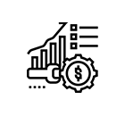

선박 해양 연구소
선도적 시장창출을 위한 세계 최고 수준의 제품 개발 신기술 개발과 기계/전기분야 기술 융합을 통해 선박/해양플랜트에 탑재 되는 각종 기계/전기 장치의 자동화, 시뮬레이션 및 응용 엔지니어링 기술에 대한 연구를 수행하고 있습니다.
첨단 기술

높은 생산률

쉬운 유지 보수
해양 연구
- 선형 연구
- 선형/추진기 최적화 설계 및 조종성능 해석 평가, 선형/추진기 최적화 시스템 구축
- GHG저감 및 Energy Saving Device 연구, 극지 운항 선박 설계기술 개발
- 신제품 및 주력선종 대우 표준선형 개발, 마케팅 및 고객/관계사 기술집원
- 구조/진동 소음 연구 분야
- 선박/해양구조물의 강도 및 피로 해석, 위험도 기반 하중 및 구조 안전성 연구
- 실험 기반 구조 시험 평가 및 수명 예측 평가 기술 연구, 극지 해양 기술 개발
- 진동 소음 계측/평가 및 Software 개발, 진동 소음 Engineering 분야 연구
- HVAC 관련 Engineering 분야 연구, 수중방사소음 해석 및 계측
- 유체/성능 연구 분야
- 내항성능(Seakeeping) 및 유체동하중 연구, 위치 유지 시스템(계류계/DP) 연구
- 슬로싱(Sloshing) 연구, CFD를 이용한 유동 해석 연구, 파랑중 저항성능 평가 연구
- 해양 기상/환경 연구, 조종성능(Maneuvering) 연구, 태풍 방제 및 안벽 계류 해석
- 선박/해양 프로젝트 최적화 연구, Transportation & Installation 해석 기술 개발
산업 기술 연구소
생산분야 자동화 연구, 로봇응용 연구, 용접기법/장치/변형제어 등 용접기술연구, 측정기기/기술/계측의 시험측정 연구, 도장기술과 친환경/에너지저감 환경방식연구등 현장의 생산성 향상과 품질혁신을 목표로 연구를 진행하고 있습니다
첨단 기술
높은 생산률
쉬운 유지 보수
해양 연구
- 용접 기술 연구 분야
- 용접기법 개발과 적용성 연구 및 용접장치 개발과 적용성 연구
- 금속 재료 평가/ 가공 신기술 개발 및 적용 방안 연구, 비파괴 검사기술 연구
- 용접부 변형 제어 및 강도 평가 기술 개발,용접/금속재료/평가 가공 신기술 개발
- 생산 기반 연구 분야
- 측정기술 및 정도관리기술 연구,생산환경 개선, 작업자 안전/보건 향상 기술 개발
- 도장/방식 재료 및 시스템 개발,도장/방식 시스템 성능 평가,품질 향상 기술 개발
- 산업기술연구소 운영/기획 업무
- 기계 자동화 연구 분야
- Smart Factory 시스템 개발, 조선해양용 로봇 및 자동화시스템 개발
- 생산자동화 공정 최적화 연구, 차세대 생산 시스템/장치 개발, 고유 기술 장비 개발
- 로봇 및 자동화 핵심기술 확보, 자동화 기술 현업 지원
특수 성능 연구소
국내 최초의 해양 방위산업 관련 전문 연구소로 설립되어 잠수함 핵심기자재 국산화 연구개발, IT기반 전투체계 연구와 동시에 해양자원 개발을 위한 엔지니어링 등을 수행및 플랜트 설계 연구를 진행하고 있습니다
첨단 기술
높은 생산률
쉬운 유지 보수
해양 연구
- 특수 성능 연구 분야
- 특수선 사업 경쟁력 강화를 위한 핵심 제품 연구개발, 전투체계 및 스텔스 연구
- 신개념 함정 연구 개발, 통합 생존성 분석 및 관련 시스템 연구 개발

- 에너지 시스템 연구 분야
- 친환경/GAS 신제품/신기술 개발, Offshore/Onshore 제품 기술 개발
- 공정/기계시스템 프로젝트 적용 기술 개발 및 지원, 프로젝트 기술 지원
- 기전 시스템 연구 분야
- Machinery & Electronics 융합시스템 연구
- 선박/해양플랜트 및 특수선 통합자동화 시스템 개발, 전기시스템 기술 개발
- System Interface/Integration & Commissioning 기술 개발,전자통신 기술 연구